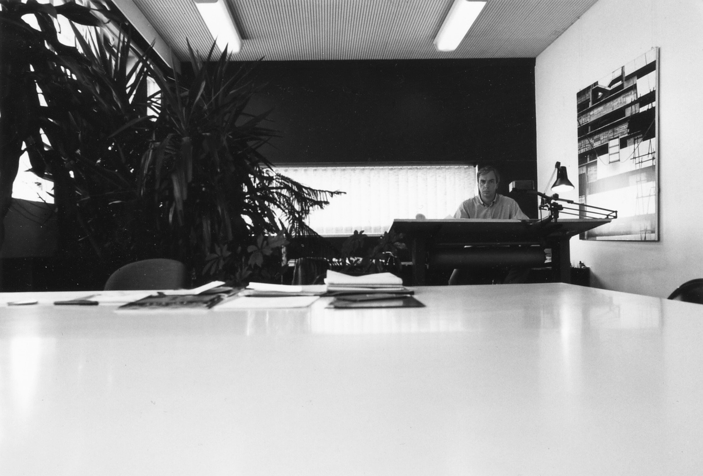

Jan tijdens zijn studie bouwkunde, ca. 1970.

Jan en Herman Haan (Atelier Aa) werkend aan Sterrenburg 3 (Dordrecht), ca. 1974

Jan in zijn werkkamer op het bureau aan de Kipstraat 1 in Rotterdam, ca. 1984

Het ontwerpteam renovatie Westelijk Handelsterrein te Rotterdam met Bouke Ylstra, Jan, n.b., Henk Klunder, Cor Kraat, 1999